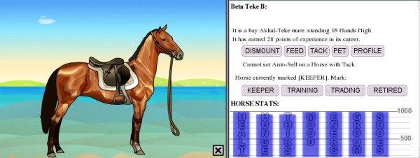
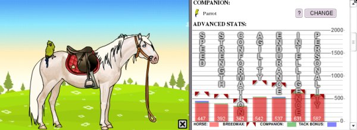

When you click on HORSES in the Button Panel, you will get a list of horses and a chance to look at them individually. Clicking on LOOK will give you access to the horses' statistics or STATS. This is how you know how much training your horse has, and whether it needs food, water, shoeing, veterinary care or just a little love. Pay very carefully attention to the Statistics, because your horses' value and performance depends greatly upon them.
The top of the horse's statistics page will give you several options: You can MOUNT or DISMOUNT (get on or get off) your horse; you can FEED it; you can TACK it or untack it (one button does both); you can PET it to improve its mood, and you can write a small PROFILE for it. The profile description and horse name must follow the rules of the game and can only be up to 250 characters long. Stylizing your horse's profile (adding colors or italics) will shorten the amount of text you can have. Instructions on how to stylize the profile can be found in the Help Center under HORSES -> Viewing, under TOOLBAR -> Profile/Map or clicking on this link, Profile Stylizing.
Also on the horse statistics page you can set your horse's status as a KEEPER (one you will not part with for any reason), a horse in TRAINING, that you are competing with and riding, but that you might be willing to sell under the right circumstances; as TRADING, that is, a horse for whom you are actively seeking a new home, or RETIRED, a horse with whom you are no longer competing, or whom you are not riding, but whom you don't want to part with. (Please, when considering buying a horse from another player, do not ask to buy a KEEPER or a RETIRED horse; doing so is very annoying to owners and they will not forget you in the future!)
You will also see here blue bars which give you stats on your horse's current condition; his HEALTH, HUNGER, THIRST, MOOD, ENERGY, GROOMING and SHOES. To allow your horse to perform at his best, all these blue bars should be as high as you can arrange before entering a competition.
If you scroll down a bit, you will see another set of bars that give you information about more enduring characteristics of your horse. Each breed has a Breed Maximum which is the highest amount of a characteristic that this kind of horse can achieve. Wild horses have stats well below the breed maximum, and these can be improved by training in that area. Taking a horse to a trainer (which you can do once a game day) will increase stats by 10 points per training session. Specialized tack (jumping, racing, etc) will also help increase various stats, depending upon the kind of tack. Giving a horse a companion will also increase various stats. Companions are also very helpful; you can buy these at pet stores, and different companions will have varying effects on a horse's stats. (However, companions and tack have the same effects on horses of all breeds.)
A VERY IMPORTANT NOTE ABOUT TRAINING: A number of players have set themselves up as "horse trainers," who will use the training pens in their ranches to raise your horse's stats. While many of these players are reputable and honest, there are, unfortunately, many who will take a horse from you and never give it back. Because of this, and the extreme difficulty of tracking down these deals, we urge you NEVER to give/loan or otherwise transfer, apart from selling, one of your horses to another player for any reason. Remember that sometimes, Real Life interferes; you may not be able to pick up your horse on time, or for some reason a trainer may not be able to log on. Keep your horses with you at all times. If you give your horse to another player to train or board and they sell it or won't give it back, there is nothing the administrators can do about it.